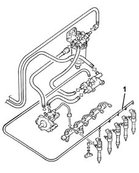

1060C INJECTOR HIGH PRESSURE, FUEL CIRCUIT LEAKAGE TEST
- Path
- Test > 10 ENGINE UNIT > 1060 DIESEL INJECTION SYSTEM > 1060C INJECTOR HIGH PRESSURE, FUEL CIRCUIT LEAKAGE TEST
- Kind
- test / check procedure
- Applies to
- engines: 1.9 JTD 16V; all production periods
- Interactive page
- https://sloeber94.github.io/elrnDB-aGt/en/#/125000751
Applies to: engines: 1.9 JTD 16V; all production periods
Disconnect the electrical connections from all the fuel injectors.
Disconnect the fuel recirculation pipes from all the fuel injectors.
Turn the ignition key to the start position for 5 seconds and visually inspect that the quantity of recirculation fuel which comes out of the injector connections is more or less the same for all of them, and is very little.
